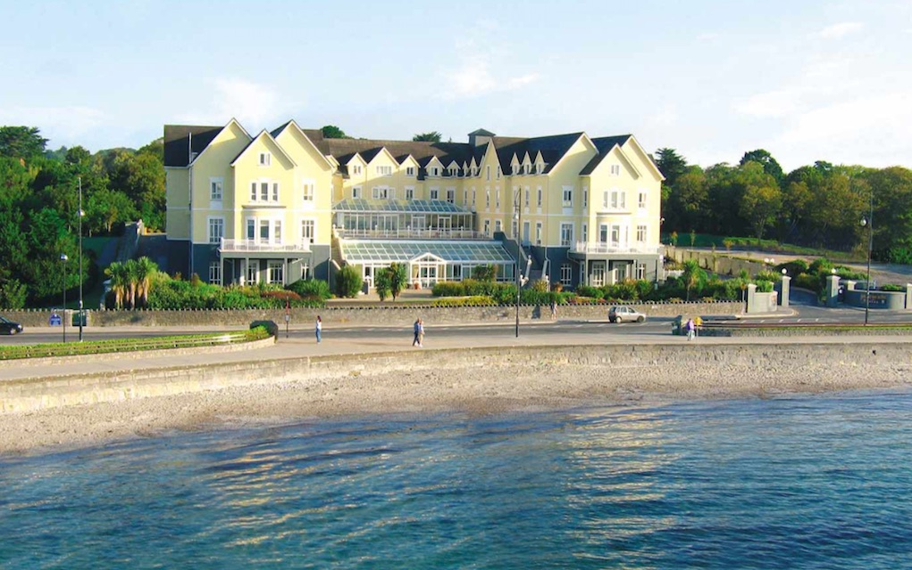
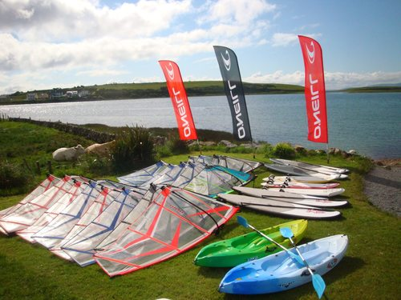
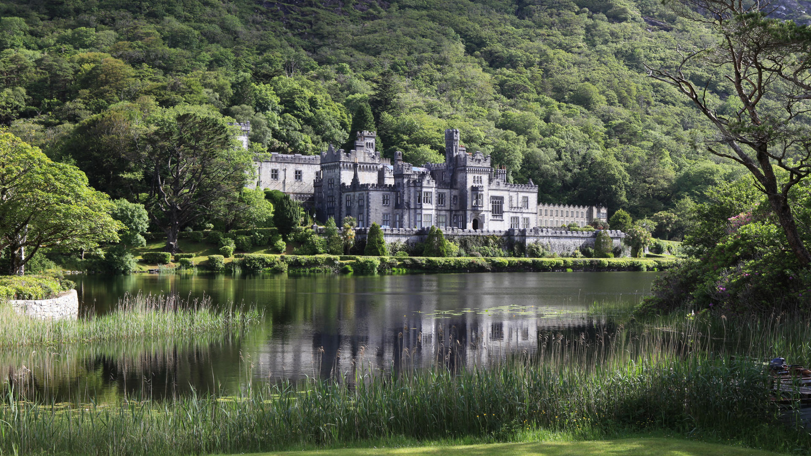
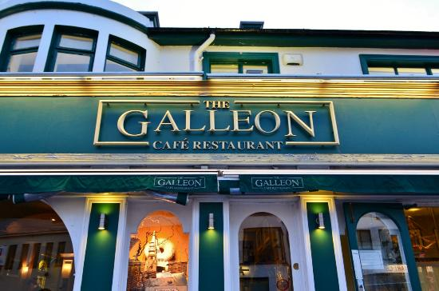

Beautiful wellness rooms with treatments you‘ll love. A first class restaurant serving the finest local produce. Stylish sea view suites for that special occasion and a bustling bar where you drink in the atmosphere. For a break that’s easy on your budget there are always great value packages on offer at the Galway Bay Hotel. Take a stroll along Salthill's famous Promenade or venture into Galway City for a spot of shopping or sightseeing.
Located just 5km from Galway city, Rusheen Bay offer windsurfing, kayaking and stand up paddleboarding lessons and rental. They provide a full range of activities for kids, adults, families, hen & stag parties, corporate groups and schools as well as the best kids summer camp in Galway! The school is stocked with the latest top of the range equipment and our team is made up of Ireland's most talented watersports people.
Kylemore Abbey is a Benedictine monastery founded in 1920 on the grounds of Kylemore Castle, in Connemara, County Galway, Ireland. The abbey was founded for Benedictine Nuns who fled Belgium in World War I. The Estate includes large walled Victorian Gardens. Since the 1970s these have been open for public tours and 'nature' walks. The Benedictine community has restored the Abbey's gardens and Cathedral with donations and local artisans in order to be a self-sustaining estate.
An institution in Salthill, it takes pride in its friendly, experienced staff and its newly refurbished premises, to offer you an exceptional dining experience. With their extensive menu, they have something for everyone, be it a fussy child, a meat lover or a gourmet eater with a refined taste. Their scrumptious selection of food includes hearty meats, delicate fish, light salads, creamy pasta and indulgent desserts. They also have gluten- free options for coeliacs and vegetarian specialities.
